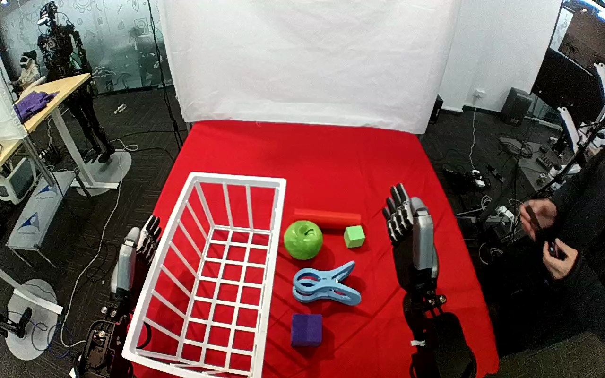

ActionNet · 01JJ141D4HW47GWFAL
01jj141d4hw47gwfal

Annotation
From the dedicated visual review of this video (humanoid_action_v1). Plain text · JSON
Observed outcome
- Status
successful_visible_placement
- Description
The blue clamp is released inside the white wire basket and rests on its floor while the hand withdraws to an upright pose.
- Selected action outcome
successful_visible_placement
- Source overall success label
not used to infer outcome
Hand roles
- Lower right visible arm
Sole manipulating hand: moves from an upright rest pose to the blue clamp, curls fingers over the clamp with the thumb on the opposing underside, bears the clamp during lift and transport, lowers it into the basket, extends its fingers to release it and withdraws.
- Lower left visible arm
Upright and stationary at the far lower-left edge, partly behind the white basket, throughout; no observed contact with the clamp, basket or any task object.
Coordination
Single-hand object placement. No hand-to-hand transfer or bimanual stabilization. A person (apparently the teleoperator holding controllers) stands/leans at the right edge and in the background but does not touch the robot, clamp or basket.
Robot-side evidence
- Active arm
hand entering from the lower-right edge of the initial image
- Initial frame evidence
Paired robot forearms enter from the near lower image edges; the active hand is attached to the lower-right forearm, the other hand to the lower-left forearm (partly behind the white basket). The active hand is seen from its dorsal (back) side with the thumb on the image-left side, which is the geometry of a right hand viewed from behind and above. Torso and shoulders are outside the image, and camera pose or mirroring is not independently established.
- Confidence
Visible-arm identity is unambiguous; anatomical right is suggested by hand geometry but not independently established, so the prompt uses the hand entering from the lower-right edge.
Chronology
| Frames | Observation |
|---|---|
| 0–58 | Both robot hands upright and still. Clamp lies on the red cloth between the basket and the active hand, beside a green apple, green cube, red cylinder and purple block. A person at the right edge holds hand controllers, moves back and forth, then steps out of view. |
| 60–98 | The right-side hand tilts forward and extends toward the clamp; by frame 80 the fingers are over the green block/clamp-handle area with the thumb beside the clamp's handle end, and by frame 100 fingers rest on the top jaw of the clamp. |
| 100–128 | The hand slides over the clamp's handle end; thumb and curled fingers close on opposing sides of it (frames 114-128). The clamp is still on the tabletop, then shifts slightly with the hand. |
| 130–158 | Grasp is established and the clamp starts to separate from the table (frame 150 shows it dragged up and left). |
| 160–200 | The hand lifts the clamp (frame 160 clearly held in air above the cloth, frame 180 over the apple, frame 200 at the basket's right rim). No second-hand contact. |
| 202–254 | The held clamp is carried left over the rim into the white wire basket and lowered; the arm extends far into the image (frame 220-246 show the clamp hanging below the hand inside the basket). |
| 254–262 | At frame 254 the clamp is still hanging from the hand; by frame 258 the fingers extend and open and the clamp drops from the grasp, lying on the basket floor by frame 260-262. |
| 264–300 | The open hand rises slightly above the basket and moves back toward the right with fingers extended, clear of the clamp. |
| 302–395 | The hand reorients to a near-upright pose (frame 340 fingers pointing up-left) and returns to its starting posture beside the apple/cube side by frame ~360; the clamp remains in the basket lower-left through the final frame 395. The person returns to the right edge, looking down at controllers. |
Differences from the publisher annotation
- The source calls the target a container; the observed target is an open white wire basket (shelf-like grid sides, clamp visible through the wires).
- Source says pick up from the table; observed object is a large blue plastic clothes-pin style clamp with a white hand-side lever, on a red cloth-covered table.
- No left/right hand is stated in the source.
Uncertainties
- Anatomical left/right of the active hand is not independently established; thumb-on-image-left dorsal view suggests a right hand, but the prompt uses the unambiguous lower-right edge description.
- Exact thumb/finger contact points on the clamp are partly occluded by the palm; a regrasp cannot be ruled out between frames 100-150.
- The exact first lift frame (about 150) and release frame (about 256-258) lie between sampled frames.
- Whether the clamp touches the basket floor directly or is partly supported by the wire grid cannot be established from the oblique view.
- The background person is judged a teleoperator, not an interacting partner; this role is inferred, not stated.
Complete review record action_review.json
{
"dataset": "ActionNet",
"episode_id": "01JJ141D4HW47GWFAL",
"prompt_protocol": "humanoid_action_v1",
"prompt_provenance": "visually_authored_from_video_and_initial_frame",
"review_scope": "One dedicated agent reviewed the complete unchanged 396-frame top/rgb.mp4 and the generation first frame. Full single-task sequence retained.",
"source_video": "../../original/top/rgb.mp4",
"conditioning_first_frame": "../first_frame.png",
"generation_video": "../../original/top/rgb.mp4",
"action_prompt": "../actiongeneration_prompt.txt",
"source_frame_start": 0,
"source_frame_end_exclusive": 396,
"fps_rational": "30/1",
"resolution": [
1280,
800
],
"source_annotation": {
"verbatim_task_prompt": "Pick up the clamp from the table and place it in the container.",
"task_prompt_path": "../../original/task_prompt.txt"
},
"anatomical_side_evidence": {
"active_arm": "hand entering from the lower-right edge of the initial image",
"initial_frame_evidence": "Paired robot forearms enter from the near lower image edges; the active hand is attached to the lower-right forearm, the other hand to the lower-left forearm (partly behind the white basket). The active hand is seen from its dorsal (back) side with the thumb on the image-left side, which is the geometry of a right hand viewed from behind and above. Torso and shoulders are outside the image, and camera pose or mirroring is not independently established.",
"confidence": "Visible-arm identity is unambiguous; anatomical right is suggested by hand geometry but not independently established, so the prompt uses the hand entering from the lower-right edge."
},
"arm_roles": {
"lower_right_visible_arm": "Sole manipulating hand: moves from an upright rest pose to the blue clamp, curls fingers over the clamp with the thumb on the opposing underside, bears the clamp during lift and transport, lowers it into the basket, extends its fingers to release it and withdraws.",
"lower_left_visible_arm": "Upright and stationary at the far lower-left edge, partly behind the white basket, throughout; no observed contact with the clamp, basket or any task object."
},
"coordination": "Single-hand object placement. No hand-to-hand transfer or bimanual stabilization. A person (apparently the teleoperator holding controllers) stands/leans at the right edge and in the background but does not touch the robot, clamp or basket.",
"chronology": [
{
"frames": [
0,
58
],
"observation": "Both robot hands upright and still. Clamp lies on the red cloth between the basket and the active hand, beside a green apple, green cube, red cylinder and purple block. A person at the right edge holds hand controllers, moves back and forth, then steps out of view."
},
{
"frames": [
60,
98
],
"observation": "The right-side hand tilts forward and extends toward the clamp; by frame 80 the fingers are over the green block/clamp-handle area with the thumb beside the clamp's handle end, and by frame 100 fingers rest on the top jaw of the clamp."
},
{
"frames": [
100,
128
],
"observation": "The hand slides over the clamp's handle end; thumb and curled fingers close on opposing sides of it (frames 114-128). The clamp is still on the tabletop, then shifts slightly with the hand."
},
{
"frames": [
130,
158
],
"observation": "Grasp is established and the clamp starts to separate from the table (frame 150 shows it dragged up and left)."
},
{
"frames": [
160,
200
],
"observation": "The hand lifts the clamp (frame 160 clearly held in air above the cloth, frame 180 over the apple, frame 200 at the basket's right rim). No second-hand contact."
},
{
"frames": [
202,
254
],
"observation": "The held clamp is carried left over the rim into the white wire basket and lowered; the arm extends far into the image (frame 220-246 show the clamp hanging below the hand inside the basket)."
},
{
"frames": [
254,
262
],
"observation": "At frame 254 the clamp is still hanging from the hand; by frame 258 the fingers extend and open and the clamp drops from the grasp, lying on the basket floor by frame 260-262."
},
{
"frames": [
264,
300
],
"observation": "The open hand rises slightly above the basket and moves back toward the right with fingers extended, clear of the clamp."
},
{
"frames": [
302,
395
],
"observation": "The hand reorients to a near-upright pose (frame 340 fingers pointing up-left) and returns to its starting posture beside the apple/cube side by frame ~360; the clamp remains in the basket lower-left through the final frame 395. The person returns to the right edge, looking down at controllers."
}
],
"observed_outcome": {
"status": "successful_visible_placement",
"description": "The blue clamp is released inside the white wire basket and rests on its floor while the hand withdraws to an upright pose.",
"selected_action_outcome": "successful_visible_placement",
"source_overall_success_label": "not used to infer outcome"
},
"source_annotation_discrepancies": [
"The source calls the target a container; the observed target is an open white wire basket (shelf-like grid sides, clamp visible through the wires).",
"Source says pick up from the table; observed object is a large blue plastic clothes-pin style clamp with a white hand-side lever, on a red cloth-covered table.",
"No left/right hand is stated in the source."
],
"uncertainties": [
"Anatomical left/right of the active hand is not independently established; thumb-on-image-left dorsal view suggests a right hand, but the prompt uses the unambiguous lower-right edge description.",
"Exact thumb/finger contact points on the clamp are partly occluded by the palm; a regrasp cannot be ruled out between frames 100-150.",
"The exact first lift frame (about 150) and release frame (about 256-258) lie between sampled frames.",
"Whether the clamp touches the basket floor directly or is partly supported by the wire grid cannot be established from the oblique view.",
"The background person is judged a teleoperator, not an interacting partner; this role is inferred, not stated."
],
"inspection_coverage": {
"total_decoded_frames": 396,
"overview_frame_indices": {
"start": 0,
"stop_inclusive": 394,
"step": 2,
"count": 198
},
"overview_method": "Decoded RGB every second frame into seventeen temporary 4-by-3 contact sheets (480 px tile width) outside dataset folders; reviewed all sheets.",
"native_resolution_frames": [
0,
80,
100,
108,
114,
120,
128,
140,
150,
160,
180,
200,
220,
240,
246,
250,
254,
258,
260,
270,
280,
290,
300,
320,
340
],
"native_resolution": [
1280,
800
],
"initial_png_inspected_after_full_sequence": true,
"temporary_evidence_location": "/tmp/an_review_01JJ141D4HW47GWFAL (not under generation input; removed)",
"retained_evidence_frame_directories": false
},
"preservation": {
"whole_original_single_task_clip_retained": true,
"crop": false,
"shorten": false,
"resize": false,
"reencode": false,
"source_and_generation_sha256_equal": true
},
"prompt_word_count": 82
}